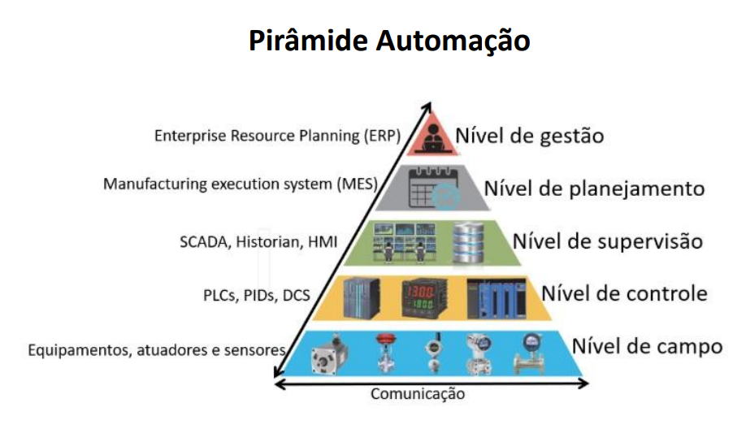
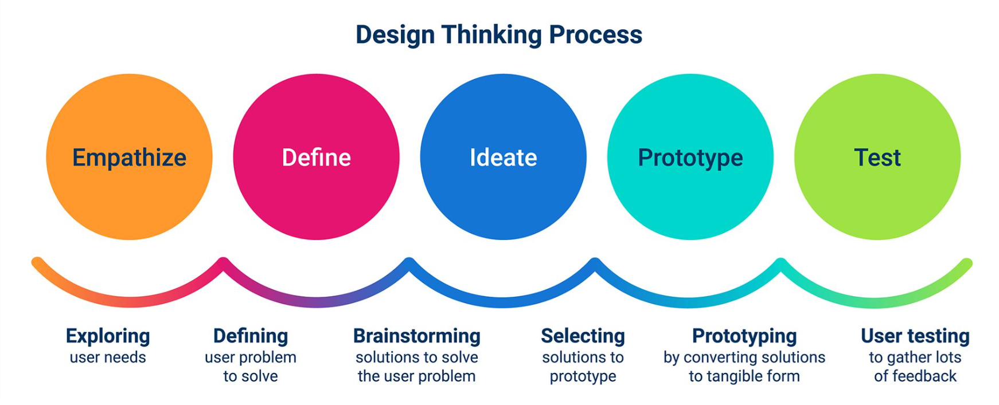
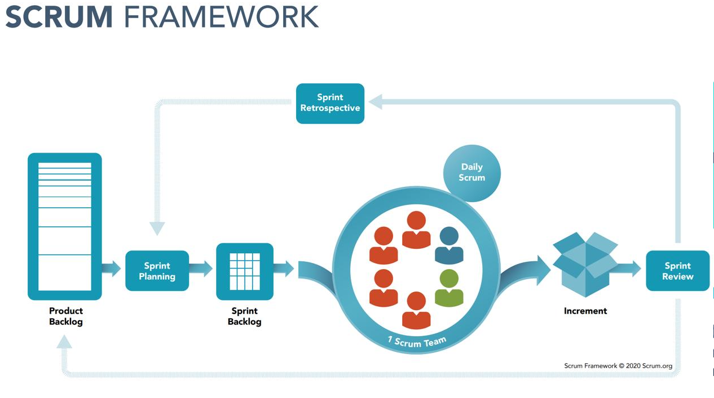

Bem-vindo ao nosso projeto de Automação Industrial
Este site apresenta o desenvolvimento de um projeto de automação industrial baseado em uma partida direta de motor, reunindo conhecimentos de elétrica, CLP, supervisório e montagem de painel elétrico. Aqui você poderá conhecer as etapas do projeto, visualizar os circuitos desenvolvidos no CADSIMU, com e sem CLP, além de entender como funciona a integração entre os equipamentos e sistemas utilizados. Também serão apresentados conceitos da Pirâmide da Automação e as ferramentas utilizadas para organização e desenvolvimento do projeto, como Trello e Scrum. Nosso objetivo é mostrar, de forma simples e prática, como os conhecimentos de elétrica, programação e automação podem ser aplicados na criação de um sistema industrial.
Pirâmide da Automação Industrial
A Pirâmide da Automação Industrial é uma representação dos diferentes níveis de tecnologia utilizados em um sistema industrial, mostrando como os equipamentos de campo, os controladores e os sistemas de supervisão se relacionam para garantir o funcionamento dos processos.
Ela é geralmente dividida em cinco níveis:
Nível 1 — Dispositivos de campo: reúne sensores, botões, motores e outros dispositivos responsáveis por enviar sinais e executar ações no processo industrial.
Nível 2 — Controle: envolve equipamentos como o CLP, responsável por executar a lógica programada e controlar o funcionamento das máquinas e dos processos.
Nível 3 — Supervisão: inclui sistemas supervisórios, que permitem monitorar o processo, visualizar informações e acompanhar o estado dos equipamentos.
Nível 4 — Gestão da produção: envolve sistemas que auxiliam no planejamento, acompanhamento e gerenciamento da produção industrial.
Nível 5 — Gestão empresarial: corresponde ao nível estratégico, relacionado ao planejamento geral da empresa, à análise de dados e à tomada de decisões.
No nosso projeto de partida direta, podemos relacionar principalmente os níveis de campo, controle e supervisão, compreendendo como os componentes elétricos, o CLP e o supervisório participam da automação.
Explore a Pirâmide da Automação e conheça como cada nível contribui para a integração e o funcionamento de uma indústria automatizada.

Painel Elétrico
O painel elétrico é responsável por reunir e organizar os principais componentes utilizados no controle e acionamento do sistema. Neste projeto, ele foi desenvolvido para realizar uma partida direta de motor, garantindo que os componentes estejam corretamente conectados e organizados. No painel estão presentes elementos de proteção, comando e acionamento, permitindo controlar o funcionamento do motor de forma segura e adequada. A montagem do painel também possibilita visualizar na prática como os componentes de um circuito elétrico industrial são organizados e como se relacionam entre si. Navegue pela página para conhecer os componentes do painel e entender sua função dentro do projeto.
Partida Direta com CLP
A partida direta com CLP é um sistema utilizado para realizar o acionamento e controle de um motor elétrico por meio de um Controlador Lógico Programável (CLP). Neste projeto, o CLP recebe os sinais dos dispositivos de comando e, de acordo com a lógica programada, controla o acionamento do motor. Dessa forma, o sistema permite automatizar o processo, tornando o comando mais organizado e facilitando futuras alterações na programação. A partida direta é composta por elementos de comando, proteção e acionamento, que trabalham em conjunto com o CLP para controlar o funcionamento do motor. Explore esta seção para conhecer o circuito, a programação do CLP e o funcionamento da partida direta na prática.

Partida Direta sem CLP — Circuito de Comando e Força
A partida direta sem CLP é um método de acionamento de motores elétricos em que o motor é ligado diretamente à rede elétrica, utilizando componentes eletromecânicos para realizar o comando e a proteção do sistema. O circuito é dividido em duas partes principais: o circuito de comando e o circuito de força. Circuito de comando: é responsável por controlar o acionamento do motor por meio de dispositivos como botões de liga e desliga, contatos auxiliares e a bobina do contator. Ao pressionar o botão de liga, o contator é acionado e mantém o motor ligado até que o comando de desligamento seja realizado ou uma proteção interrompa o circuito. Circuito de força: é responsável por conduzir a energia elétrica até o motor. Ele utiliza componentes como disjuntores, contator e relé térmico para realizar o acionamento e contribuir para a proteção do equipamento. Esse sistema permite compreender os princípios básicos de comandos elétricos industriais e o funcionamento dos componentes utilizados na partida de motores. Explore os circuitos de comando e força para entender como funciona uma partida direta convencional, sem a utilização de um CLP.

Projetos de Integração
As etapas de um projeto são uma sequência de atividades utilizadas para organizar, desenvolver e avaliar um trabalho,
desde a ideia inicial até a documentação final.
- Definir o tema: escolher o que será desenvolvido e qual é o objetivo.
- Elaborar o plano: definir tarefas, recursos e responsabilidades.
- Definir o cronograma: organizar os prazos de cada atividade.
- Monitorar a execução: acompanhar o andamento do projeto.
- Avaliar os resultados: verificar o funcionamento do processo e a qualidade do produto.
- Avaliar a experiência: identificar dificuldades, aprendizados e melhorias.
- Documentar o projeto: registrar as etapas, os resultados e as informações técnicas.
Onde se usa?Em projetos escolares, industriais, de programação, desenvolvimento de produtos e implantação de sistemas.
Design Thinking

O Design Thinking é uma abordagem para compreender problemas, desenvolver ideias e criar soluções a partir das necessidades dos usuários. Nos slides, ele aparece como uma etapa de estratégia e execução anterior ao processo de Scrum.
Suas etapas principais são:
- Entendimento dos objetivos: compreender o problema e o que precisa ser alcançado.
- Pesquisa e definição: reunir informações e delimitar o problema.
- Ideias e protótipos: criar possíveis soluções e representações iniciais.
- Validação: testar as ideias e verificar se atendem às necessidades.
Para que serve? Para encontrar soluções, melhorar produtos e desenvolver projetos de forma organizada.
Onde se usa? Na criação de sites, aplicativos, máquinas, produtos industriais e melhorias de processos.
Scrum Framework

O Scrum é um framework de trabalho que ajuda equipes a organizar tarefas e desenvolver projetos em ciclos curtos chamados Sprints. Ao final de cada ciclo, a equipe avalia o resultado e identifica melhorias.
Principais papéis
- Product Owner: organiza as prioridades e define o que tem mais valor no projeto.
- Scrum Master: ajuda a equipe a compreender e aplicar o Scrum, removendo obstáculos ao trabalho.
- Developers (equipe de desenvolvimento): executam as tarefas e produzem os resultados planejados.
Principais elementos e atividades
- Product Backlog: lista de tudo o que precisa ser desenvolvido.
- Sprint Planning: reunião para planejar o trabalho do ciclo.
- Sprint Backlog: tarefas selecionadas para a Sprint.
- Daily Scrum: encontro diário para acompanhar o progresso.
- Sprint Review: apresentação e avaliação do resultado produzido.
- Sprint Retrospective: análise do trabalho da equipe para identificar melhorias.
- Incremento: resultado produzido durante a Sprint que atende aos critérios de qualidade definidos.
Para que serve? Para dividir projetos grandes em partes menores, acompanhar o progresso e adaptar o planejamento conforme necessário.
Onde se usa? No desenvolvimento de softwares, sites, produtos, projetos de engenharia e trabalhos em equipe.
Como aplicar no projeto de partida direta
No projeto de automação industrial, esses conceitos podem ser utilizados da seguinte forma:
- Etapas do projeto: definir o objetivo da partida direta, planejar a montagem do painel, estabelecer prazos, realizar testes e documentar os resultados.
- Design Thinking: compreender os requisitos do sistema, pensar em soluções e validar o projeto antes da implementação.
- Scrum: dividir o trabalho em tarefas, como elaborar o circuito de força, elaborar o circuito de comando, programar o CLP e desenvolver o supervisório.
- Kanban: organizar as tarefas no Trello em colunas como “A fazer”, “Em andamento” e “Concluído”.
Essas ferramentas ajudam a manter o projeto organizado, acompanhar as atividades e identificar melhorias durante o desenvolvimento.
Organização do Projeto com Trello
O Trello é uma ferramenta de gerenciamento de projetos que permite organizar tarefas, acompanhar o progresso e distribuir atividades entre os integrantes da equipe. No nosso projeto Mundo SENAI, utilizamos o quadro para organizar as etapas de desenvolvimento do sistema de partida direta, incluindo o painel elétrico, os circuitos de comando e força, o CLP, o supervisório e a documentação do site. Por meio de cartões e listas, podemos visualizar as atividades que precisam ser realizadas, as que estão em andamento e as que já foram concluídas, facilitando a comunicação e a organização da equipe durante o desenvolvimento do projeto.
clique aqui para:
Acessar nosso Trello